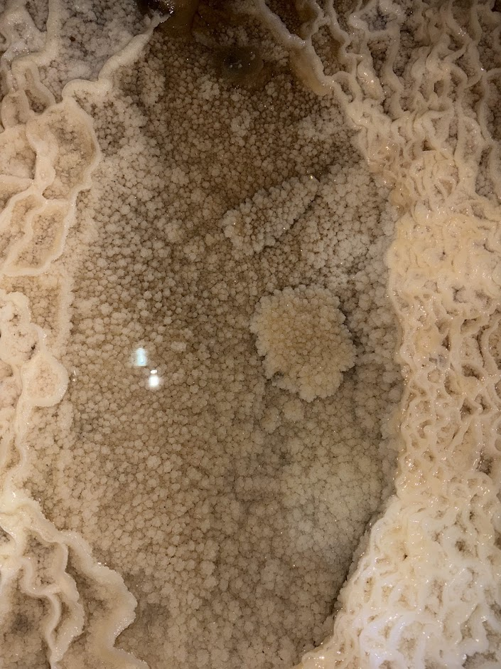
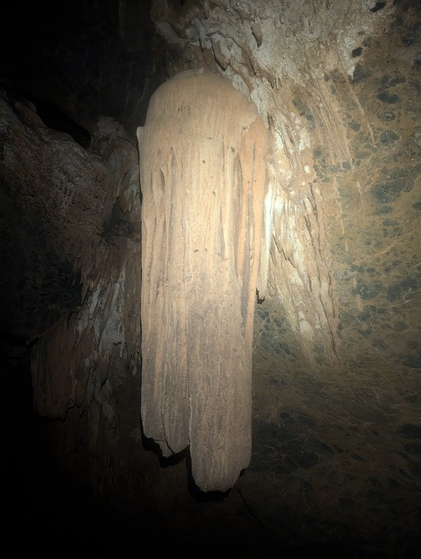
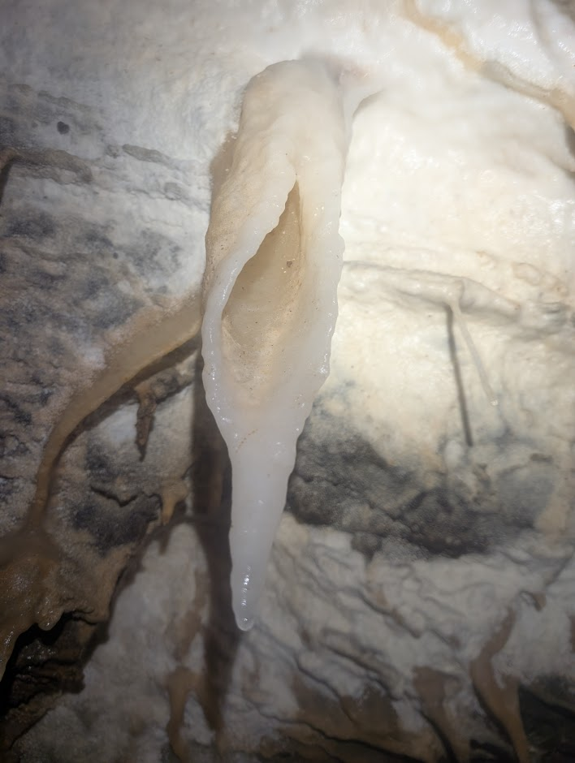
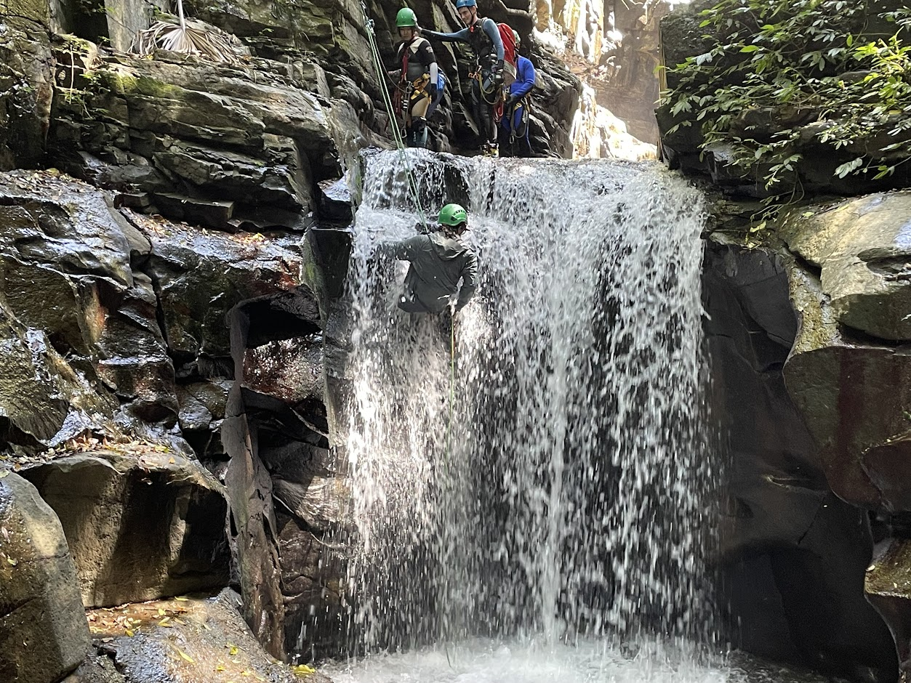

Tuglow Caves
Tuglow’s pitches drop straight into broad stream passages that keep you moving between ropework, crawls, and echoing chambers. The recent map tooltip links here while we gather SRT topo sketches, so expect more detailed rigging beta and water level notes soon.
View Tuglow on the Map ↗
Jenolan Caves
From Mammoth’s boulder chokes to Aladdin’s sculpted chambers, Jenolan is where many NUCC members first taste proper vertical caving. This placeholder will soon expand with trip leader notes, navigation tips, and a gallery drawn from decades of visits.
View Jenolan on the Map ↗
Bungonia Caves
Bungonia offers a choose-your-own-adventure mix of squeezes, ladders, and skylit river crossings. The map tooltip now lands here so we can later attach printable PDFs for J5 and J6, plus packing lists for beginner weekends.
View Bungonia on the Map ↗
Wee Jasper
The Dip Cave system keeps delivering with crystal pools, tight crawls, and endless side leads. Expect this space to receive survey overlays and camping logistics so newcomers can plan a relaxed weekend around the Goodradigbee River.
View Wee Jasper on the Map ↗
Macquarie Pass Canyon
When the weather heats up, NUCC heads to Mac Pass for refreshing swims and photogenic waterfall abseils. We will be adding canyon topo sketches, approach notes, and hydrology pointers once the canyoning crew finishes compiling them.
View Mac Pass on the Map ↗
Bendethera Caves
Bendethera is a multi-day Deua River expedition featuring remote camping, long stream crawls, and hidden dry sections. This placeholder lets the new map buttons resolve somewhere useful until we publish the full expedition logistics pack.
View Bendethera on the Map ↗